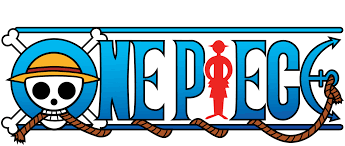

|  | home zoro sanji zoro vs sanji |
Sanji"Black Leg" Sanji , [6] nascido como Vinsmoke Sanji , [23] [24] [25] é o cozinheiro dos Piratas do Chapéu de Palha . Ele é o quinto membro da tripulação e o quarto a se juntar, fazendo isso no final do Arco Baratie . Nascido como o terceiro filho e o quarto filho da Família Vinsmoke [26] (tornando-se assim um príncipe do Reino de Germa ), ele renegou sua família duas vezes, uma na juventude e novamente após se reunir com eles como adulto. [27] Depois de fugir dos Vinsmokes quando criança, ele acabou ficando aos cuidados de Zeff como o sous chef do Baratie , onde permaneceria até conhecer Luffy, que o convenceu a se juntar à sua tripulação Seu sonho é encontrar o suposto paraíso do chef, All Blue , que é onde East Blue , West Blue , North Blue e South Blue se encontram, junto com sua vida selvagem. Ele é um dos quatro melhores lutadores dos chapéus de palha, ao lado de Luffy , Zoro e Jinbei . Ele atualmente tem uma recompensa de Beli.png330 milhões, o terceiro maior da tripulação depois de Luffy e Jinbei . [28] Apesar de renunciar a seu sobrenome Vinsmoke, [24] o Governo Mundial o rotula como parte de seu nome em seu pôster de procurado |
|
Eiichiro Oda |
|